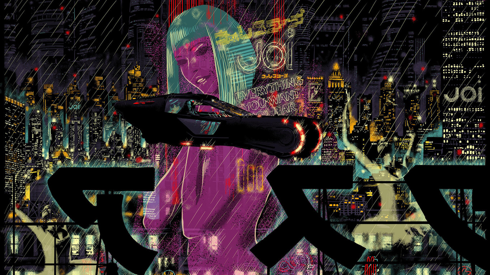

Meu nome e Jaqueline Camilo Dias, tenho 24 sou de Barueri, São Paulo e moro com meus pais e um irmão mais velho, sempre estive envolvida com tecnologia, pois meu pai e meu irmao realizam manutenção de computadores e atualizava sistema, então codigos e logica estava em meu dia a dia, ja fui bailarina e dançar e meu maior hobby, amo musica,seriados e filmes de ficcao cientica como bailarina a persistencia e dedicação fazia parte do meu treinamento, após iniciar no ensino médio, não conseguia consiliar ambos, pois a escola que estudava integrava o ensino médio com curso escolhido, então começei a estudar logistica e me ajudou a obter orientação ao futuro, pois precisa prever oque aconteceria com calculos e envios de produtos, com a conclusão, inicei faculdade, sendo em tecnologia em jogos digitais, quando escolhi o curso, sempre fiquei curiosa de como era desenvolvimento de jogos e suas etapas, tendo a habilidade orientação ao detalhe, para ser criando um jogo de RPG com base em The Witcher, arrisquei em mestrar aulas para crianças orientando na criação de jogos sendo a comunicação a base de minhas aulas, visto que ensinava crianças a criar e desenvolver sua criatividades, em seguida comecei meus estudos na Generetion e hoje sou formada sendo Desenvolvedora Junior FullStack Java, o bootcamp me ajudou a obter a mentalidade de crescimento que quero aplicar e aprender cada vez mais.
Só há duas maneiras de viver a vida: a primeira é vivê-la como se os milagres não existissem. A segunda é vivê-la como se tudo fosse milagre.
Albert Einstein
